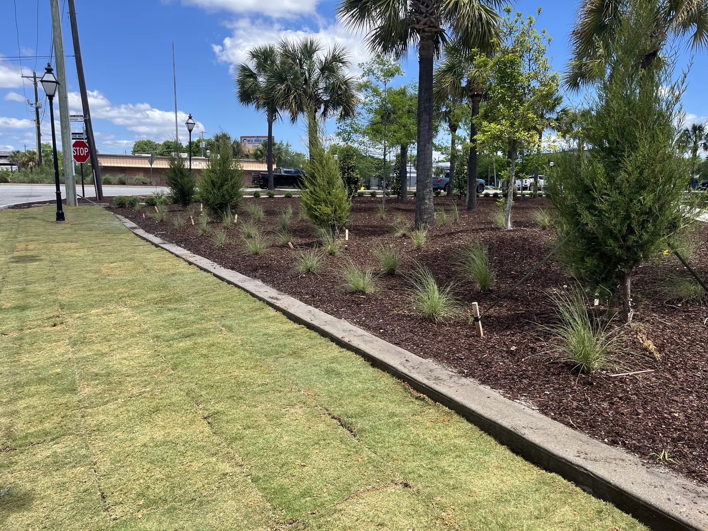

Fixing a Wet Yard in Charleston

If It Is Still Wet Three Days Later
If part of your yard is still wet three days after rain, or water runs toward the house instead of away from it, that is fixable — and it is the first thing to fix, because everything else you spend money on sits on top of it.

Grading or a Drainage System?
Every wet yard is one of two problems.
If the ground is bumpy or slopes toward the house, we would rather regrade it. Moving water with the shape of the ground is the fix that keeps working, with nothing to clog and nothing to maintain.
Plenty of Lowcountry houses sit low and simply cannot be given slope away from them. Those yards need a system. And on a property with mature landscaping, adding drainage rather than regrading can save tearing out and redoing the planting — often the difference between a sensible job and an expensive one.
What We Install
- French drains — perforated pipe in gravel, to collect water out of ground that stays saturated.
- Catch basins — for the low point everything runs to after a storm.
- Piping off the gutters — roof water taken away underground instead of dumped at the foundation, which is the most common cause of a soggy strip beside a house.
- Channel drains — across a driveway, or along the junction where a pool deck meets the house. That last one is common, often necessary, and almost never on a homeowner's list.
Most real fixes use two or three of these together. What it costs depends entirely on the problem and which solutions the site allows, so we quote after walking the yard rather than from a price list.
Do It Before the Rest
Grading and drainage go in before planting, sod, irrigation and hardscape, because they are what nobody can fix afterwards without digging the yard up again. A patio built on ground that falls toward the house moves the problem rather than solving it.
See drainage and grading for the services, or the design guide for where they sit in a project.
What the Code and the Rainfall Records Say
2021 IRC R401.3 · Drainage
The code sets a minimum slope away from every house: the ground has to fall at least 6 inches within the first 10 feet of the foundation. Where a lot line, a wall or a slope makes that impossible, drains or swales have to carry the water away instead. Paved surfaces within 10 feet of the house, including patios, walks and pool decks, have to slope at least 2 percent away from it.1
South Carolina did not modify this section.2
Charleston averages 52.51 inches of rain a year, according to NOAA's 1991-2020 climate normals for Charleston International Airport.3 Getting that water away from the foundation is the whole reason the slope rule exists, and why grading comes before anything else on a wet lot.
Beyond the Code: What Building Scientists Add
The code sets the slope. Building Science Corporation, whose research much of the industry builds on, points at what undoes it afterwards: soil that was backfilled against a foundation or over a utility trench settles, and the slope can end up running back toward the house. Their answer is to compact that backfill properly and keep roof water away with overhangs, gutters, downspouts and swales.4
For the gutter piping itself, the Department of Energy's Building America guidance says to carry downspout water to daylight at least 5 feet from the foundation, or to an underground catchment at least 10 feet away, and never to tie it into the perforated foundation drain, which soaks the very foundation it is meant to protect.5
References are to the 2021 edition South Carolina enforces today; the 2024 edition takes effect statewide on January 1, 2027. Your local building department decides how any of it applies to a particular property.
Sources
- UpCodes, South Carolina Residential Code 2021, based on the 2021 International Residential Code. Source
- SC Building Codes Council, 2021 South Carolina Code Modifications (State Register Vol. 46, Issue 5, May 27, 2022). Source
- NOAA National Centers for Environmental Information, U.S. Climate Normals, 1991-2020 (Charleston International Airport). Source
- Building Science Corporation, BA-1015: Bulk Water Control Methods for Foundations (Kohta Ueno and Joseph Lstiburek, 2011). Source
- U.S. Department of Energy, Building America Solution Center, Gutters and Downspouts. Source
Frequently Asked Questions
Who do I call about standing water in my yard?
We handle yard drainage across Charleston and the Lowcountry: French drains, catch basins, gutter piping and channel drains, or regrading where that is the better answer. The consultation is free.
Do I need regrading or a drainage system?
If the yard is bumpy or slopes toward the house, we prefer regrading. If the house sits low and cannot be given slope, a system is the answer. On an established yard, drainage can save redoing the landscaping.
What does drainage work cost?
It depends entirely on what is causing the water and which fixes are possible on your site, so we quote after walking the property.
When should drainage be done in a project?
First. Grading and drainage go in before planting, sod, irrigation and hardscape, because they cannot be fixed later without digging the yard up again.
See It Built
Projects where we put this into practice.

Planning a Project of Your Own?
See everything we design and build, or get in touch to talk through your ideas with Doug and Zach.